공장보다 광고가 먼저
이 영상은 요즘 미국에서 쓰는 돈 버는 방식 하나로 시작해요. 순서가 거꾸로예요. 물건을 먼저 만들지 않고 광고부터 만들어요. 아래 그림이 그 흐름이에요. 왼쪽부터 가상 브랜드, 광고·소셜, 예약·대기(반응 확인), 생산 순서로 화살표가 이어져요.
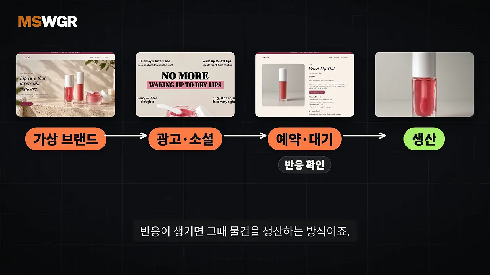
이 방식으로 잘된 사례는 많아요. 다만 광고 소재와 콘텐츠를 여러 벌 직접 만들어야 해서 센스와 노력이 많이 들었어요. 이 영상은 그 부분을 AI 도구로 얼마나 줄일 수 있는지 보여 줘요. 진행자는 '수아(sooa)'라는 립케어 브랜드를 지어냈어요. 모델 섭외도 촬영도 없이, 하룻저녁 한 자리에서 광고 이미지 34장과 영상 5편을 만들었다고 해요.
왜 작은 K뷰티 브랜드인가요
진행자는 미국 시장 숫자부터 보여 줘요. 아래 막대그래프에서 작년 K뷰티 수출 1위는 미국 22억 달러, 2위는 중국 20억 달러예요. 아래 주황 표시는 '2003년 이후'예요.
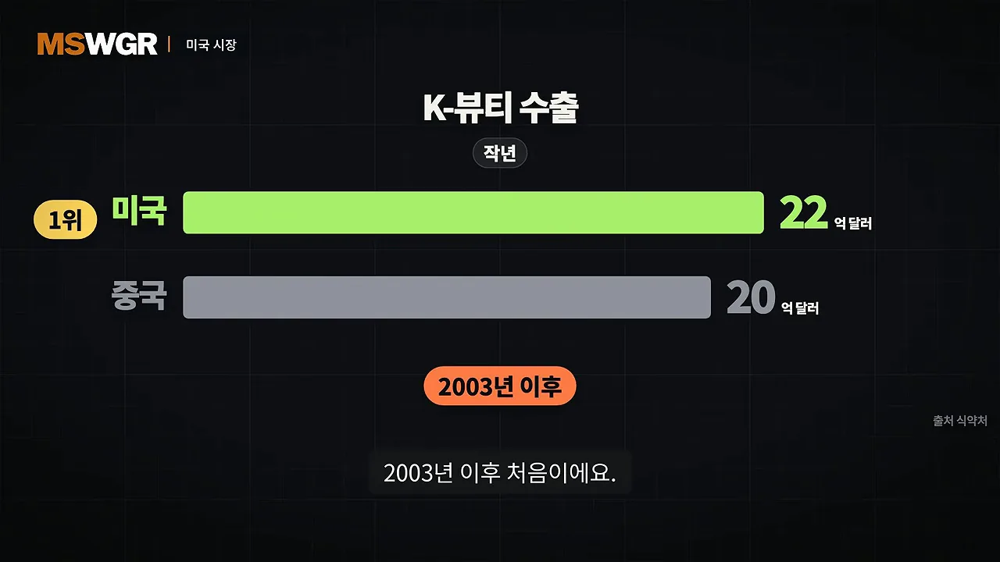
미국에서 팔려면 광고를 돌려야 해요. 인스타그램 광고를 운영하는 메타도 광고 소재를 여러 가지로 다르게 만드는 걸 오래된 기본 원칙으로 말한다고 해요. 아래 그림이 그 뜻이에요. 왼쪽은 배경만 다른 광고 열 장이고, 오른쪽은 문구와 장면이 서로 다른 광고 세 장이에요.
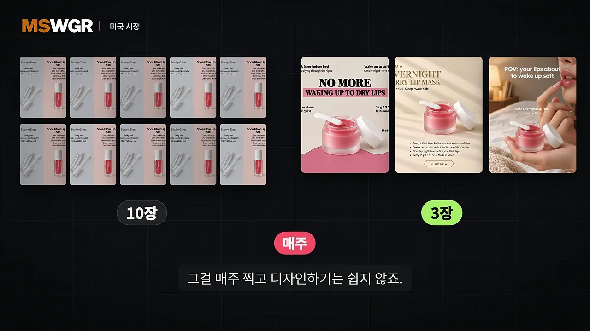
진행자가 쓴 도구는 Higgsfield Ads Studio예요. 아래 첫 화면에 버튼이 두 개 있어요. 왼쪽 Static Ads는 쇼핑몰 주소로 정적 광고를 한꺼번에 뽑고, 오른쪽 Ad Multiplier는 잘된 영상 광고 하나를 여러 버전으로 불려요.
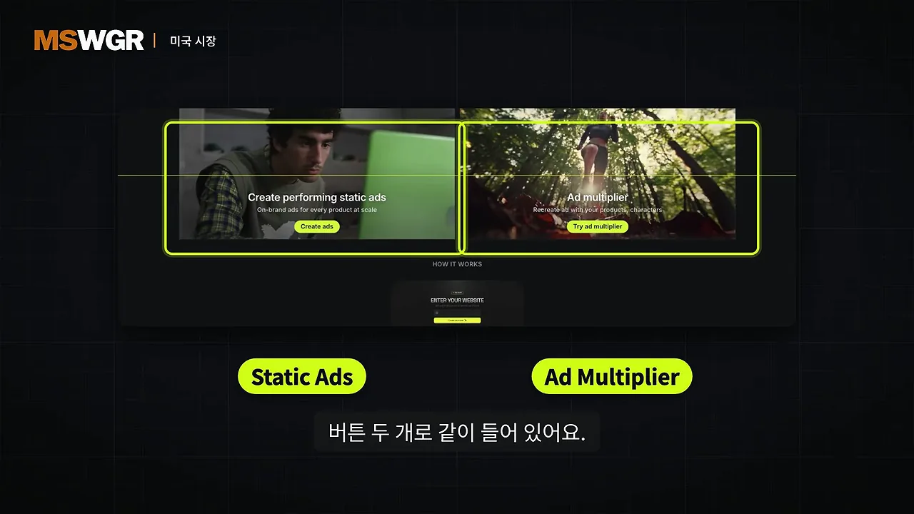
쇼핑몰 주소로 정적 광고 30장 만들기
재료는 두 가지였어요. 하나는 수아의 쇼핑몰 페이지예요. 립 오일, 벨벳 틴트, 오버나이트 립 마스크를 파는 서울 브랜드라는 설정으로 제품 사진과 소개글을 넣고 공개 주소에 올렸어요. 실제로 파는 브랜드가 아니라서 페이지 맨 아래에도 그렇게 적어 뒀어요. 다른 하나는 예전에 AI 인플루언서로 만든 12초짜리 한국어 립 오일 영상 광고예요. 자막과 제품 라벨을 입히기 전의 15초 원본도 함께 썼어요.
주소 하나로 브랜드 킷이 나와요
Static Ads 버튼을 누르면 웹사이트 주소를 넣는 칸 하나가 나와요. 수아 주소를 넣고 브랜드 만들기를 누르면 몇 초 만에 아래 브랜드 킷이 떠요. 위에서부터 이름 'SOOA', 한 줄 소개 'Seoul-made lip care', 색 여섯 개가 보여요. 오른쪽 위 로고 자리에는 수아 로고 대신 기본 아이콘이 들어가 있어요.
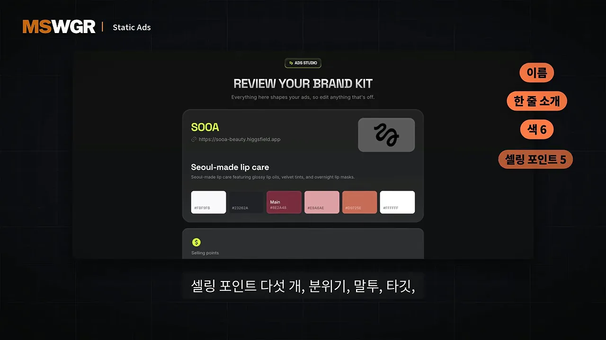
틀린 것도 있었어요. 로고는 못 가져왔고, 글꼴은 그냥 산세리프로 잡혔어요. 타깃은 '10초 만에 윤기 나는 입술을 원하는 누구나'처럼 너무 넓었어요. 칸을 누르면 바로 고칠 수 있어요. 아래는 타깃 칸을 고치는 장면이에요. 입력창에 'Women aged 22-35 in the US who love K-beauty'라고 적었어요.
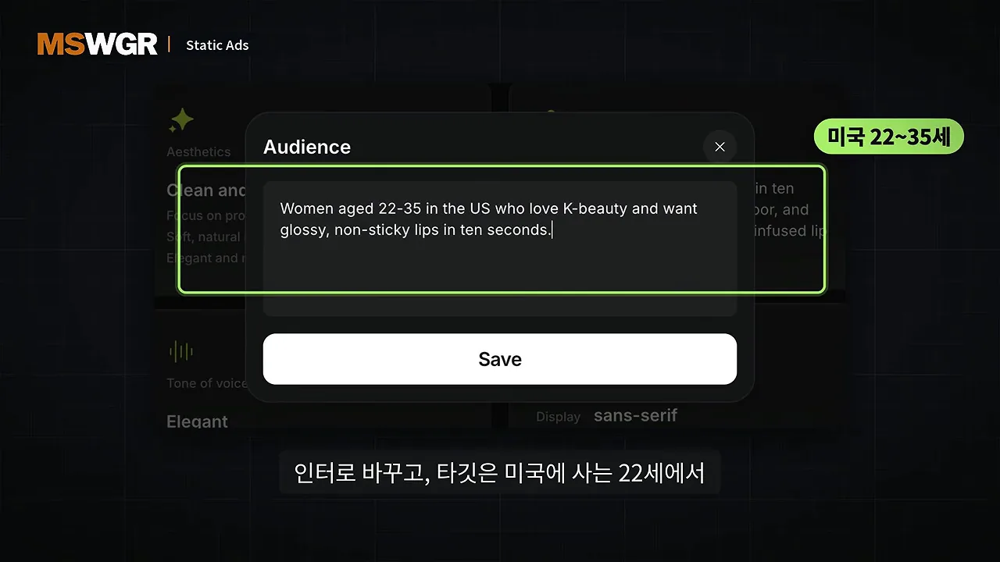
30장을 만들기 전에 비용부터 보여 줘요
계속을 누르면 사이트의 제품 세 개가 사진까지 골라져 있어요. 다음은 제품마다 광고를 몇 장 만들지 정하는 단계예요. 기본은 제품당 세 장인데 진행자는 열 장씩, 모두 30장으로 올렸어요. 그러자 아래처럼 생성 버튼에 크레딧이 먼저 떠요.
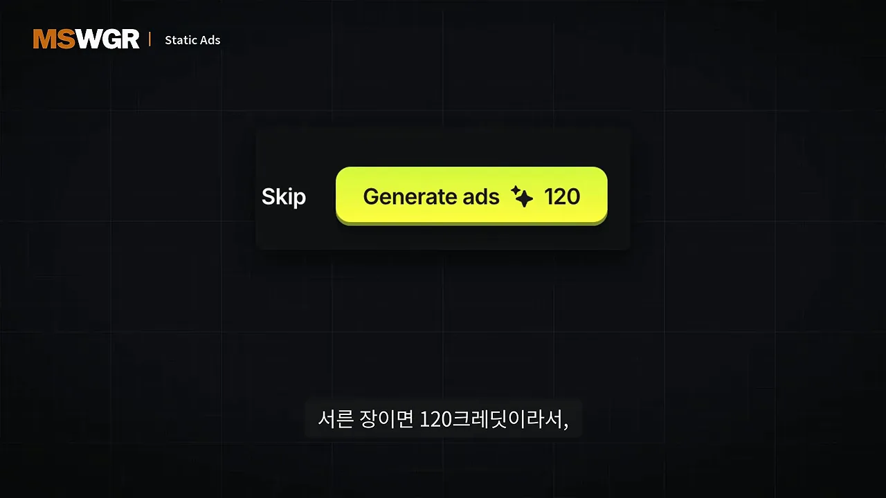
5분쯤 지나 30장이 다 나왔어요. 광고마다 그림만 다른 게 아니라 하는 말이 달라요. 아래는 같은 오버나이트 립 마스크로 만든 세 장이에요. 아래 표시가 왼쪽부터 문제, 장점, 상황이에요.
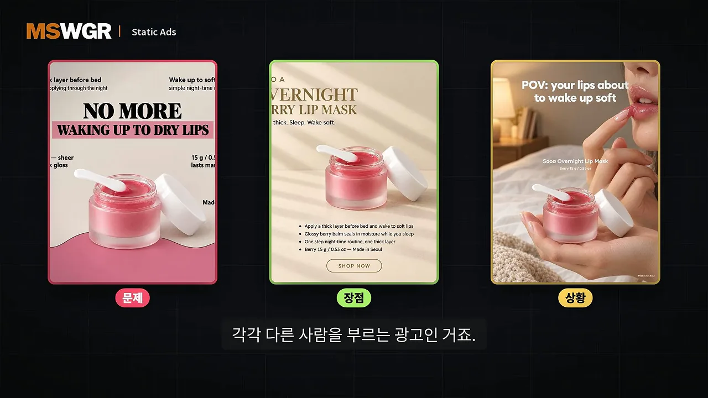
앞에서 본 '사는 이유가 다른 세 장'이 이렇게 자동으로 나온 거예요. 광고를 누르면 헤드라인, 본문, 버튼 문구, 링크 설명, 랜딩 페이지 주소가 한 세트로 붙어 있어요. 제품별로 모아 보거나 한 번에 내려받을 수도 있어요.
채팅으로 더 만들되, 숫자는 확인해요
오른쪽 채팅창으로 광고를 더 부탁할 수 있어요. '@'로 립 오일을 고르고 "블랙 프라이데이용 네 장, 20% 할인, 포근한 연말 분위기"라고 썼어요. 아래처럼 니트와 트리 불빛이 들어간 할인 광고 네 장이 같은 브랜드 톤으로 나왔어요.
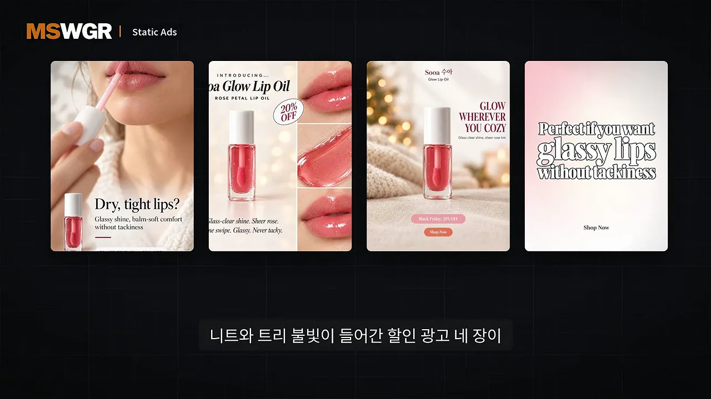
다만 숫자에서 실수가 나왔어요. 아래 오른쪽 문구 세트의 빨간 테두리 칸, 링크 설명에 '20% off — $18 today'라고 적혀 있어요. 18달러는 원래 가격이에요.
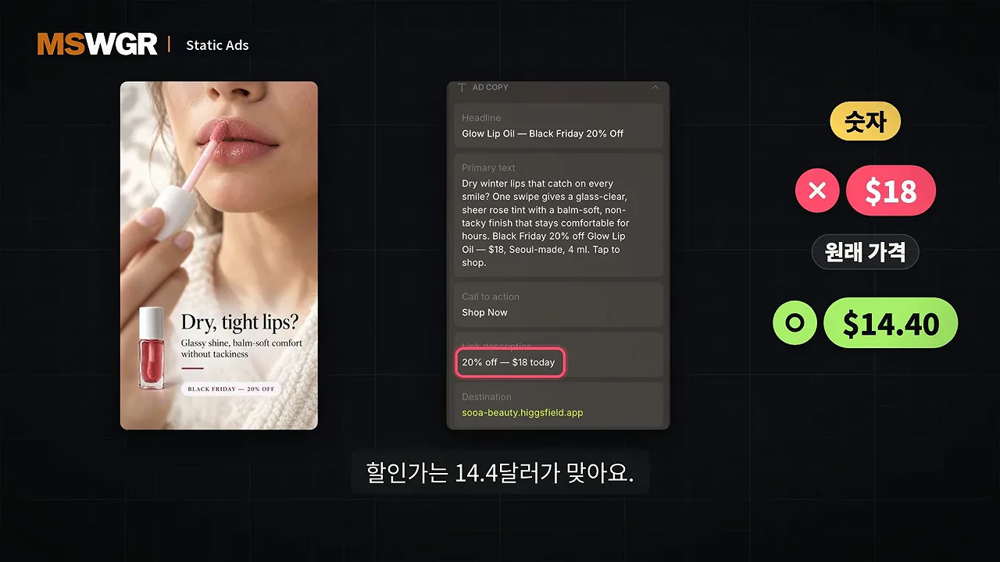
잘된 영상 광고 하나를 네 가지로 불리기
이번엔 Ad Multiplier예요. 잘된 영상 광고 하나를 여러 버전으로 불려서, 어느 쪽이 더 먹히는지 시험해 볼 수 있게 해 줘요. 아래 화면 맨 위 칸에 바꿀 원본 영상을 넣어요. 칸 안에 'Video duration: 4-30 seconds'라고 적혀 있어요. 그 아래 칸에는 바꿔 넣을 사람·제품·옷 사진을 20장까지 넣을 수 있어요.
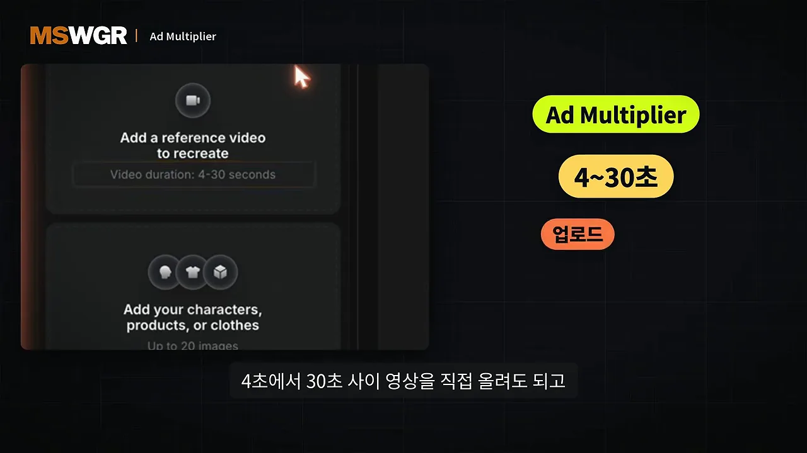
진행자는 원본 하나로 네 가지 버전을 만들었어요. 먼저 한눈에 보면 이래요.
| 버전 | 무엇을 적었나 | 바뀐 것 | 그대로인 것 · 남은 문제 |
|---|---|---|---|
| ① 제품 바꾸기 | 손에 든 립 오일을 이미지 1(벨벳 틴트)로 | 병과 입술 색이 코랄 벨벳으로 | 사람, 방, 조명, 카메라 움직임 |
| ② 첫마디 바꾸기 | 새 훅과 새 CTA(Call To Action) | 앞에 새 장면 세 개와 첫마디, 끝에 CTA | 중간은 원래 광고 |
| ③ 계절 바꾸기 | 겨울, 크림색 니트, 눈 오는 날 빛 | 줄무늬 티가 크림색 니트로 | 장면과 한국어 목소리 |
| ④ 미국판 | 30대 미국 여성 사진 + 미국 영어 | 모든 장면의 사람, 목소리 | 첫 자막 하나가 한국어로 남음 |
① 제품만 바꾸기
아래 프롬프트 칸에 'Replace the clear lip oil bottle in her hands with @'까지 쓰자, 넣어 둔 파일 목록(Video 1, Image 1)이 떠요. 오른쪽 벨벳 틴트 사진이 Image 1이에요. 여기에 "사람, 방, 조명, 카메라 움직임은 그대로"라고 덧붙였어요.
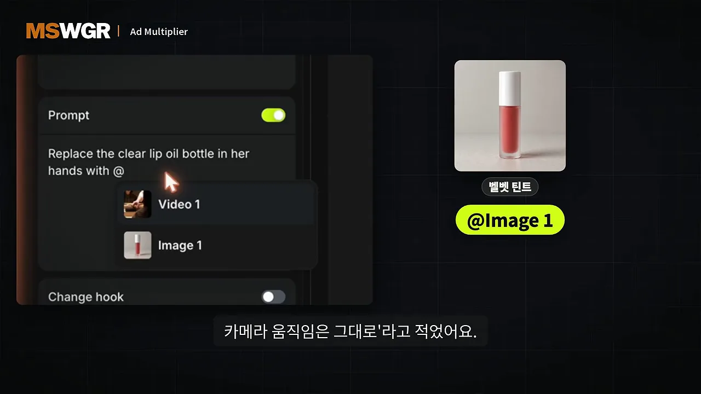
화질은 480p, 720p, 1080p 중에서 골라요. 고를 때마다 버튼의 크레딧이 같이 바뀌어서, 낮은 화질로 방향을 잡고 마음에 들면 올리는 식으로 쓰면 돼요. 진행자는 720p로 돌렸어요. 아래는 원본과 결과를 나란히 놓은 장면이에요.
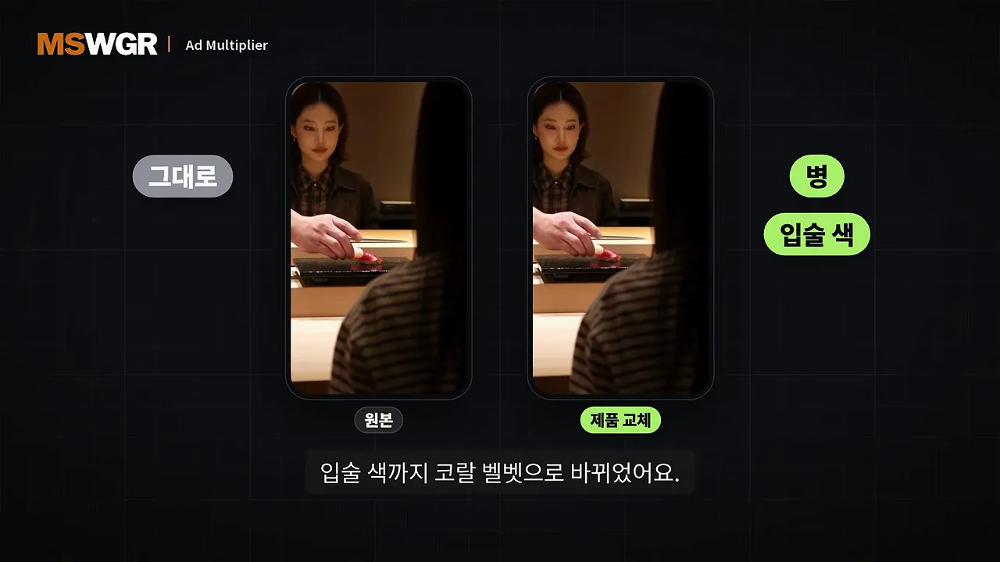
② 첫마디 바꾸기
같은 광고에서 오프닝 문장만 달리해서 어느 쪽이 더 먹히는지 볼 때 쓰는 기능이에요. 일종의 A/B 테스트용이에요. 훅 바꾸기를 켜면 프롬프트 칸이 꺼져요. 둘은 동시에 못 써요. 다시 프롬프트를 켜면 아까 쓴 글이 그대로 남아 있어서 마음 놓고 오가도 돼요. 아래 화면 위쪽 Change hook 칸에 "점심 먹고 나면 립 다 지워지죠? 이건 그대로예요."가 들어가 있어요.
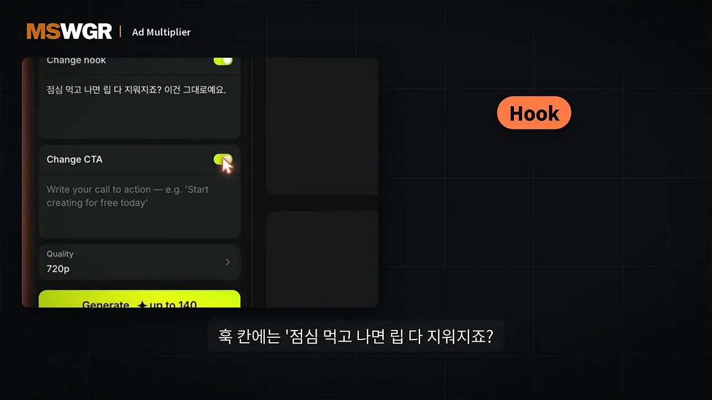
결과를 보면 영상 앞에 입술에 손을 대고 립 오일 병을 들어 보이는 새 장면 세 개가 붙었어요. 거기에 새 첫마디가 목소리로 들어가요. 아래 오른쪽 위 표시가 새 장면, 중간 그대로, 새 CTA예요.
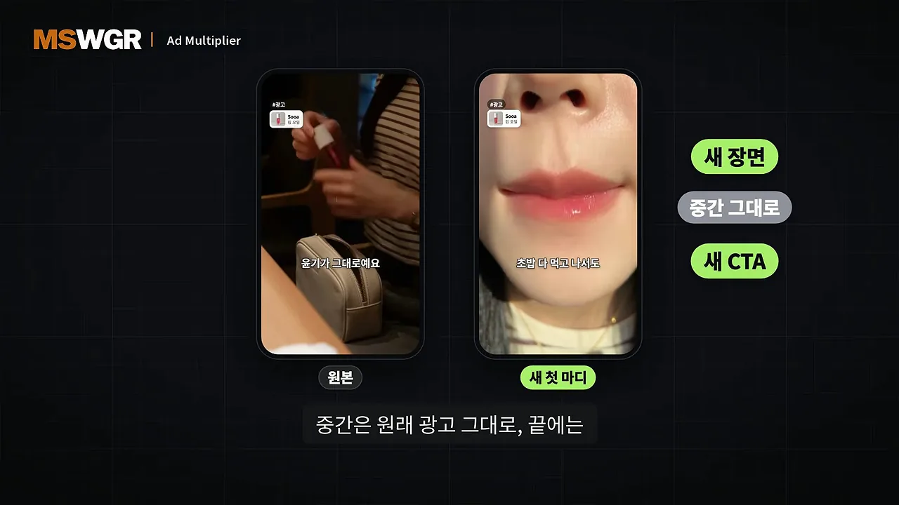
③ 계절 바꾸기
세 번째는 겨울 버전이에요. "크림색 니트를 입고, 창으로 눈 오는 날 빛이 들어오게. 사람과 제품, 동작은 그대로"라고 썼어요. 아래 두 장면을 보면 오른쪽 '겨울' 쪽만 옷이 바뀌었어요.
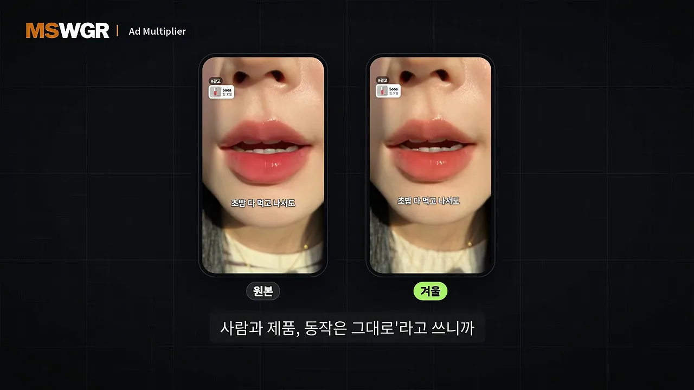
④ 미국판: 글만으로는 사람이 안 바뀌어요
처음엔 프롬프트에 "미국 시장용으로, 영어로, 30대 미국 여성으로 다시 만들어 줘"라고만 썼어요. 아래 오른쪽 '프롬프트만' 결과를 보면 얼굴이 원본과 같아요.
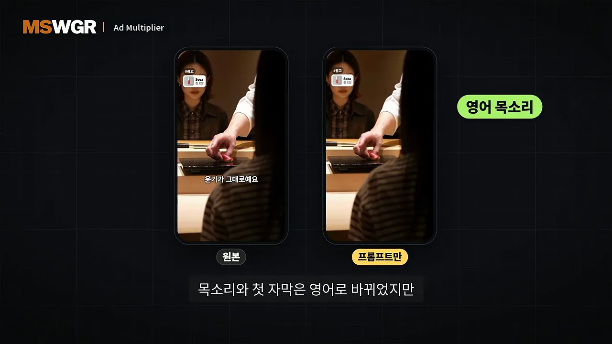
그래서 30대 미국 여성 사진을 한 장 만들어 참고 이미지로 넣었어요. "모든 장면에서 이 사람으로 바꾸고, 미국 영어로 말하게"라고 다시 돌렸어요. 아래처럼 바르는 클로즈업까지 다른 사람으로 바뀌었어요.
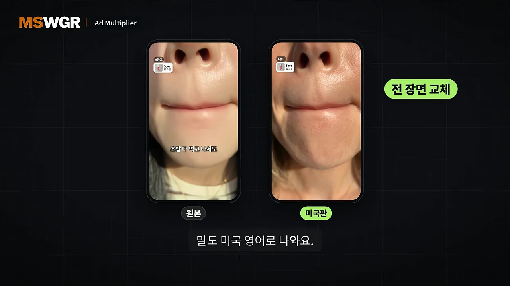
그래도 하나가 남았어요. 아래 오른쪽 표시를 보면 전 장면 교체와 미국 영어에는 동그라미가, 첫 자막에는 X가 붙어 있어요.
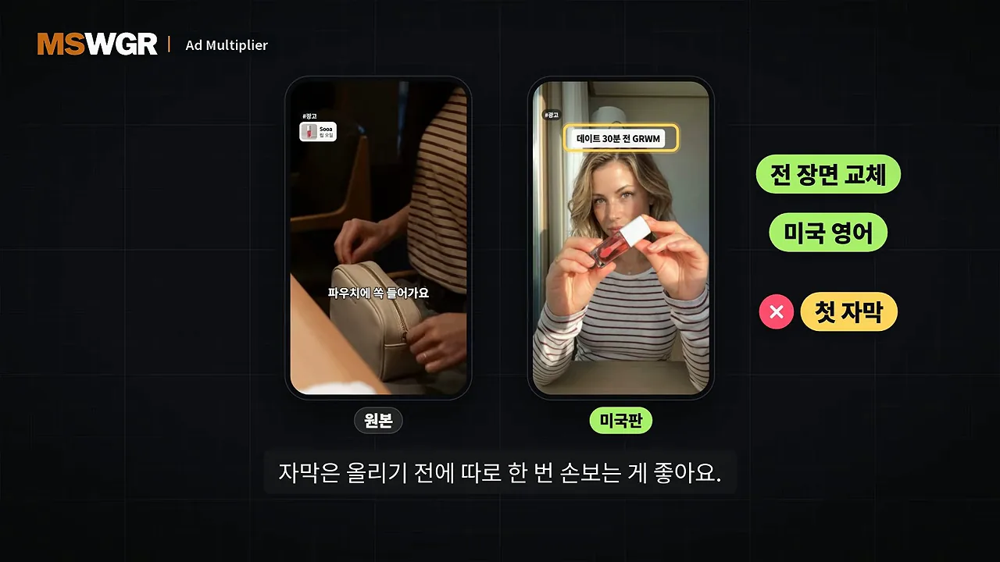
한 자리에서 나온 결과와 다음 단계
아래는 만든 영상 다섯 편을 한 줄로 늘어놓은 장면이에요. 왼쪽부터 제품, 첫마디, 겨울, 영어(프롬프트만 쓴 첫 미국판), 미국판이에요.
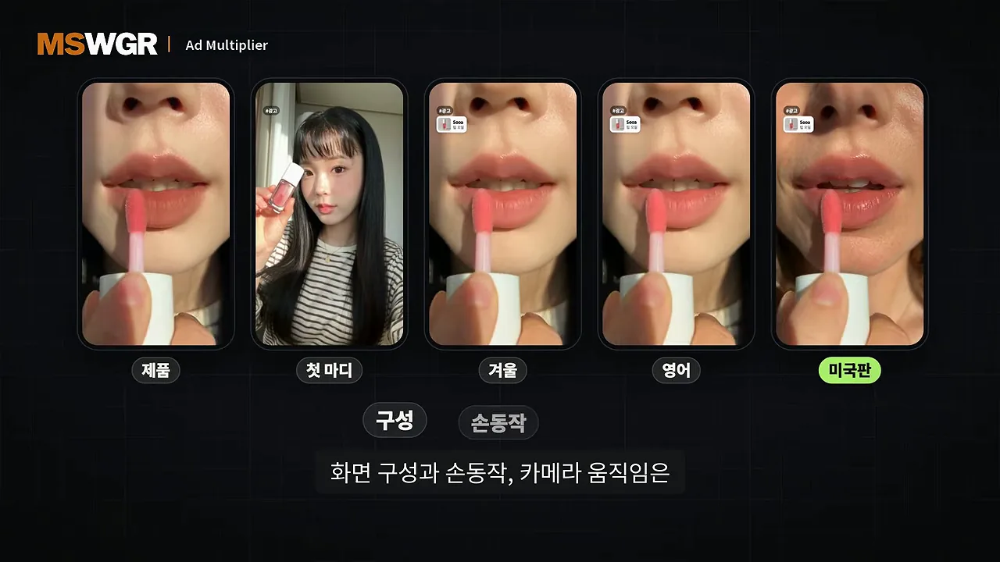
한 자리에서 나온 결과를 세어 보면 아래와 같아요. 광고 이미지 34장(정적 광고 30장과 블랙 프라이데이 광고 4장), 영상 5편, 크레딧 570이에요.
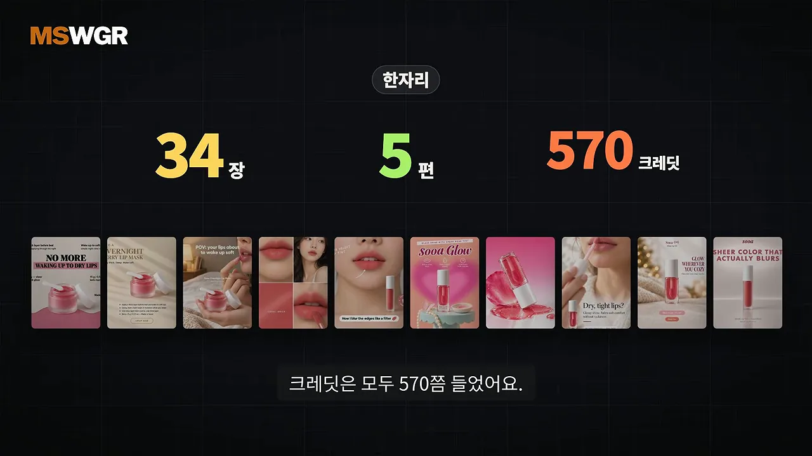
이제 남은 일은 광고를 돌려 보는 것
진행자는 여기서 처음의 흐름으로 돌아가요. 이 광고들을 실제로 돌려서 어떤 문구, 어떤 제품에 예약이 붙는지 보는 거예요. 아래 그림의 화살표처럼 광고가 먼저고 예약이 그다음이에요.
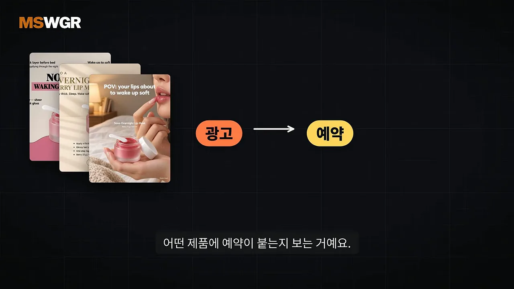
영상이 짚은 주의점도 정리해 둘게요. 브랜드 킷은 로고와 글꼴을 못 읽고 타깃을 너무 넓게 잡을 수 있어요. 할인 광고의 가격이 틀릴 수 있고, 사람을 바꾸려면 글이 아니라 참고 사진이 필요해요. 자막은 일부가 원래 언어로 남을 수 있어요. 도구가 대부분을 만들어도, 이 네 가지는 올리기 전에 사람이 봐야 해요.